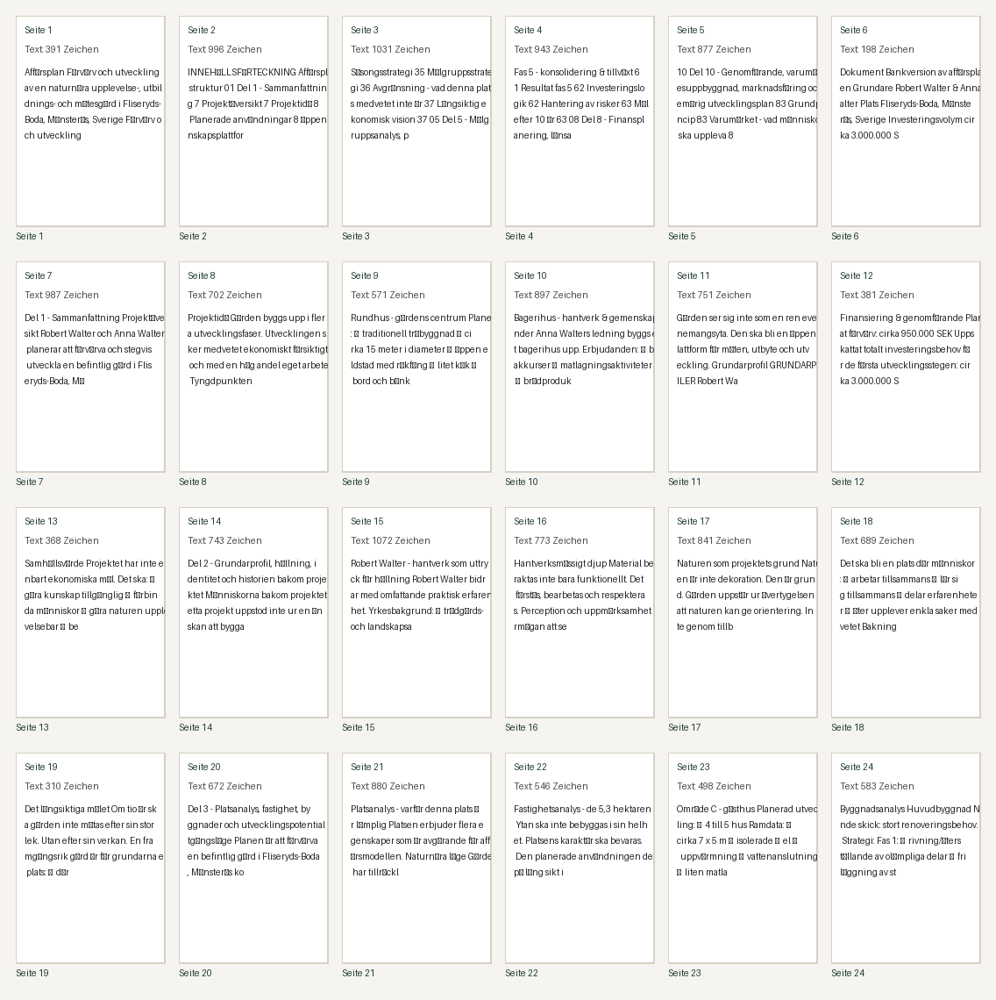
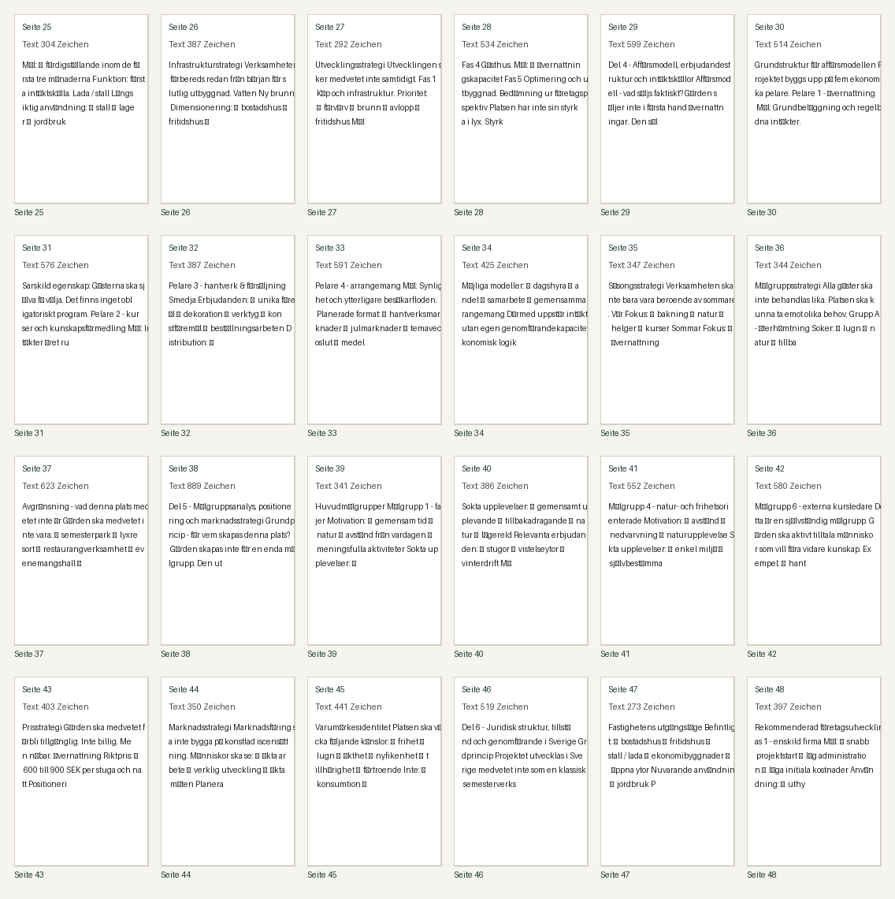
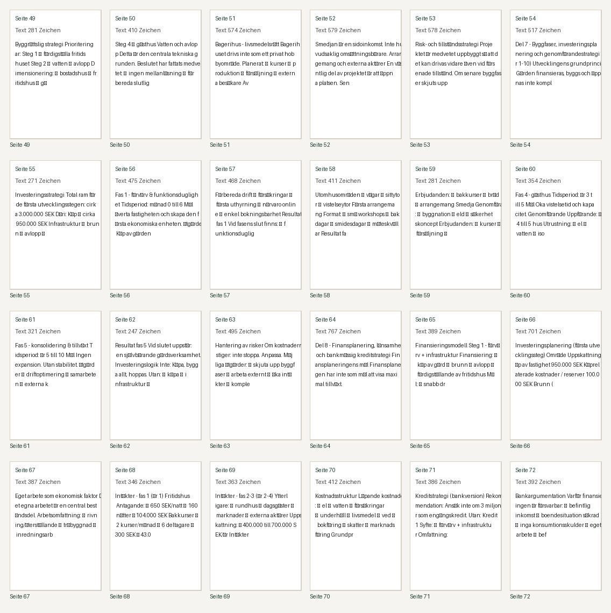
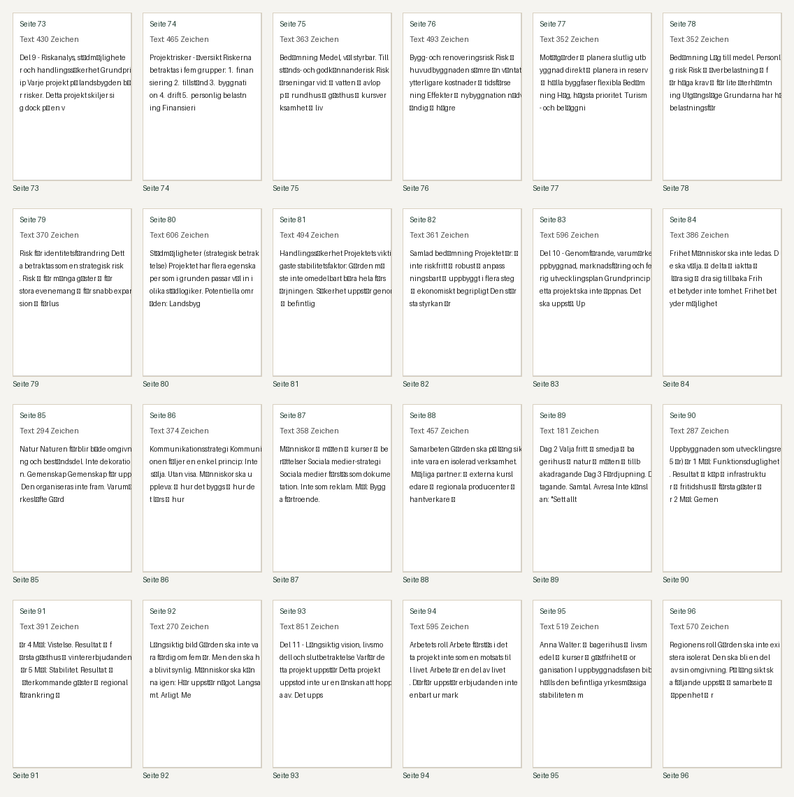
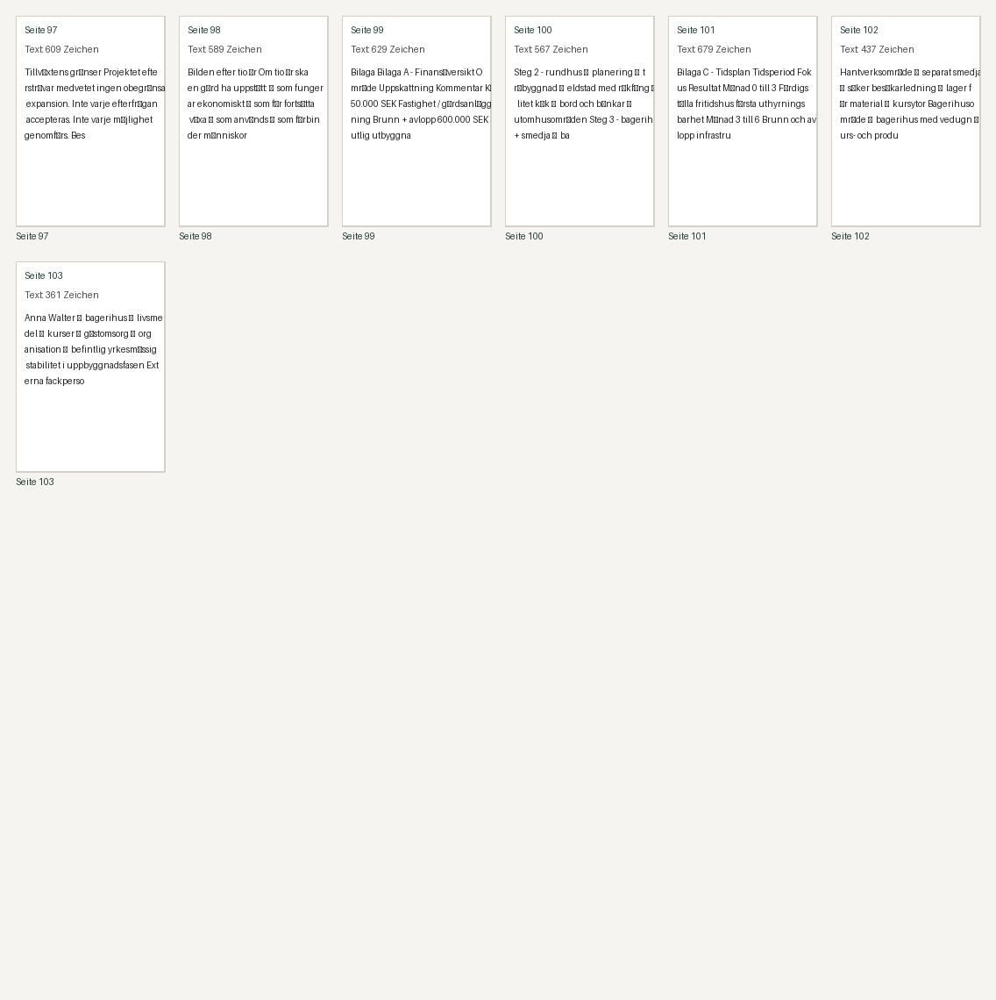

Datei: output/pdf/businessplan_robert_anna_walter_bankversion_sv_refined.pdf
Seiten: 103 | Auffälligkeiten: 0
pdftoppm not found. Install Poppler with: brew install poppler
| Seite | Grund | Zeichen | Auszug |
|---|




